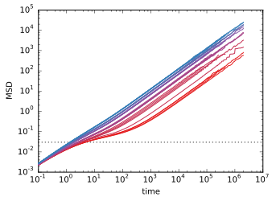

Maximal $\alpha_2$ in Monodisperse Systems
November 7, 2014
Wendell Smith
Floating Image
- grayscale
- sepia
- saturate
- invert
- opacity

Latex, Maybe?
- Simple: $a^2 + b^2 = c^2$
- Complex: $\int_0^\infty \frac{1}{\sigma \sqrt{2 \pi}} e^{-\frac{x^2}{2\sigma^2}} = 1$
Some code!
def function(x, y=32):
print("abc")
How about a Movie?